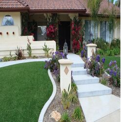

-
Houston Ready Mix Contractor: Sidewalks with Visual Appeal
Posted on September 21, 2023 by Abby Harris

Make a great first impression with a beautiful new sidewalk by your Houston ready mix contractor.
When it comes to sidewalks, most of us think about them purely in terms of practicality. Yet, the visual appeal of your sidewalk is just as important. The design of your sidewalk welcomes people into your home or business, so it’s the very first impression visitors will have of you.
That’s why we’re here to talk about how careful thought should be put into designing sidewalks for aesthetic appeal. From working with the right Houston ready mix concrete contractor to adding attractive landscaping and lighting, read on for tips on how to create eye-catching sidewalks with maximum longevity and minimal maintenance! To get a quote for your project, get in touch with our team now.
Incorporate Color or Texture with Concrete Stamping or Stenciling
A plain gray sidewalk is functional, but it’s not exactly exciting. If you’re looking to add some interest and style to a new sidewalk, consider asking your Houston ready mix contractor to incorporate color or texture through concrete stamping or stenciling. These techniques allow you to create unique patterns and designs that can complement the aesthetics of your home or business.
Concrete stamping adds texture and design to plain concrete surfaces. It’s a durable technique for creating patterns that mimic natural materials such as stone, brick, or wood. Concrete stenciling uses templates placed over the concrete which are sprayed with a colored overlay. It’s a highly customizable approach but does require more regular maintenance over time.
By adding color and texture to your sidewalk, you can enhance the curb appeal of your property and make a lasting impression on visitors.
Plant Greenery to Make the Path Feel More Inviting
A plain concrete sidewalk can feel bland and uninviting. That’s why edging it with flower beds or greenery can really make a difference. Not only do they add visual appeal, but they also bring a sense of freshness and tranquility.
In Houston, consider shrubs native to the region for lower maintenance greenery along sidewalks. The Yaupon Holly is a tough, evergreen shrub which can be pruned to your desired size and shape, and it’s drought-tolerant once established. Another good choice is the Dwarf Wax Myrtle, which grows to a manageable size, with aromatic foliage and berries that attract birds. Lastly, the Texas Sage, with its silver leaves and purple flowers, is not just attractive, but also highly resistant to pests and diseases whilst requiring minimal water.
Consider Adding Lighting Features for Safety and Ambiance
As you consider the best lighting solutions for a new sidewalk, it’s important to prioritize both safety and ambiance. Solar lights offer a convenient and environmentally-friendly option that can provide the necessary illumination along your path. With a wide variety of styles and designs available, you can easily find solar lights that not only serve their functional purpose but also complement your landscaping and overall aesthetic. Choose a lighting option that adds a warm glow to your walkway while making sure that pedestrians can clearly see where they’re going during evening hours.
Use Unique Designs with Curves to Break Up Straight Lines
Utilizing unique curves is a great way to break up the monotony of straight lines and add visual interest to a space. These curves can be used to create organic shapes that flow with the surrounding landscape or to highlight and accentuate landscaping features such as mature trees or a water fountain or pond.
Not only do curved sidewalks provide a more visually appealing atmosphere, but they can also improve safety by slowing down foot traffic and making pedestrians more aware of their surroundings. By incorporating unique designs with curves, Houston ready mix contractors can help you transform your ordinary sidewalk into a functional work of art.
Start with a Great Foundation – Use Durable, Quality Ready Mix Concrete for Your Sidewalk
Your home or business in Houston deserves the best foundation possible for your new sidewalk, and that starts with the right concrete mix. Durable, high-quality ready mix concrete is the perfect solution to ensure your sidewalk can withstand the Texas heat and seasonal weather. With ready mix concrete, you’ll be investing in a long-lasting, reliable sidewalk that will serve your property for years to come. Don’t settle for anything less than the best when it comes to your Houston sidewalk—choose ready mix concrete and start your project off on the right foot.
Work with an Experienced Houston Ready Mix Contractor
Texan Concrete Ready Mix provides durable ready mix concrete for homes and businesses throughout the greater Houston area.
Our team of industry experts are dedicated to delivering a quality product on time to meet your project deadlines. Whatever job you have, big or small, we are fully equipped to meet your needs. Contact us for a quote today!
This entry was posted in Concrete Contractor. Bookmark the permalink.